Токио · Отэмати · рёкан
HOSHINOYA Tokyo: рёкан-башня среди офисов Отэмати с онсэном на крыше
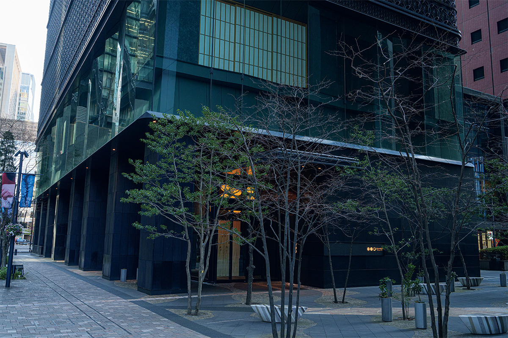
Среди стеклянных офисных башен Отэмати, в десяти минутах пешком от вокзала Токио, стоит здание, похожее на дзюбако, многоярусную японскую коробку для еды. Это HOSHINOYA Tokyo, японская гостиница-рёкан, где обувь снимают у входа и дальше до самого номера идут по татами.
Отель
Рёкан, поставленный вертикально
HOSHINOYA это сеть гостиниц, и в каждой из них стараются, чтобы история и культура места стали частью пребывания. Токийский HOSHINOYA открылся в 2016 году в Отэмати, деловом квартале у вокзала Токио. Сама гостиница называет себя «рёканом-башней»: традиционный японский уклад здесь уложен в здание на два подземных и семнадцать надземных этажей.
Выбор места не случаен. В эпоху Эдо вокруг Отэмати стояли столичные усадьбы князей-даймё, а неподалёку был мост Нихонбаси, откуда начинались главные дороги страны. Сюда стекались люди со всей Японии, и в этих кварталах складывались свои развлечения, своя кухня и свои театральные жанры.
Вблизи на фасаде проступает узор «аса-но ха кудзуси», один из мелких орнаментов эдоских тканей на мотив листьев конопли. Путь ко входу ведёт через площадь, которую устроила старая садовая мастерская из Киото: камни уложены дугами в технике «арарэ-кобоси», а под деревьями стоят скамейки, похожие на лодки. Дальше гостей встречает большая деревянная дверь из аоморийской хибы, японского туевика.
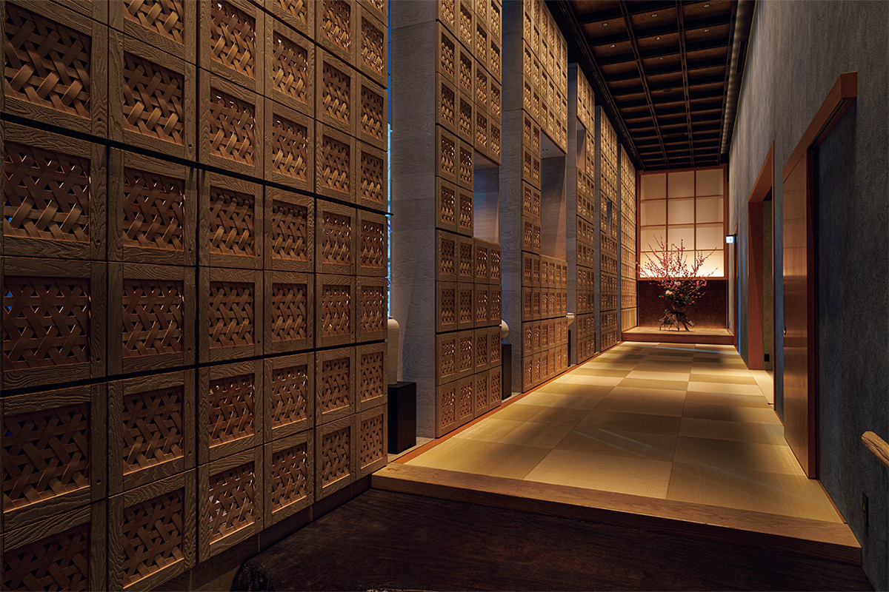
За дверью шум делового квартала остаётся позади. Высота потолка в вестибюле 5,5 метра, гости снимают обувь, и их сразу окутывает запах свежей травы игуса, из которой плетут татами. Почти весь отель соединён татами: на минус первом этаже ресторан, на первом вестибюль, на втором лобби, с 3-го по 16-й номера, а на 17-м онсэн и спа.
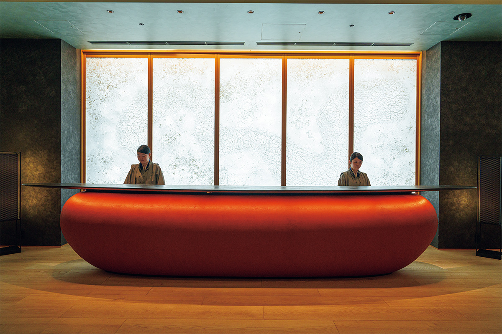
Номера
Татами, футон-кровать и чайная комната на этаже
В отеле 84 номера, на каждом этаже всего шесть. Все они японские комнаты с татами и сёдзи, в которых старый уклад соединён с привычным комфортом. Типов номеров три. Самый просторный, «Кику» («Хризантема»), занимает около 80 м² в дальнем угловом конце этажа: в нём есть гардеробная и большая ванная, он удобен для долгого пребывания. Двухместный «Юри» («Лилия») около 50 м².
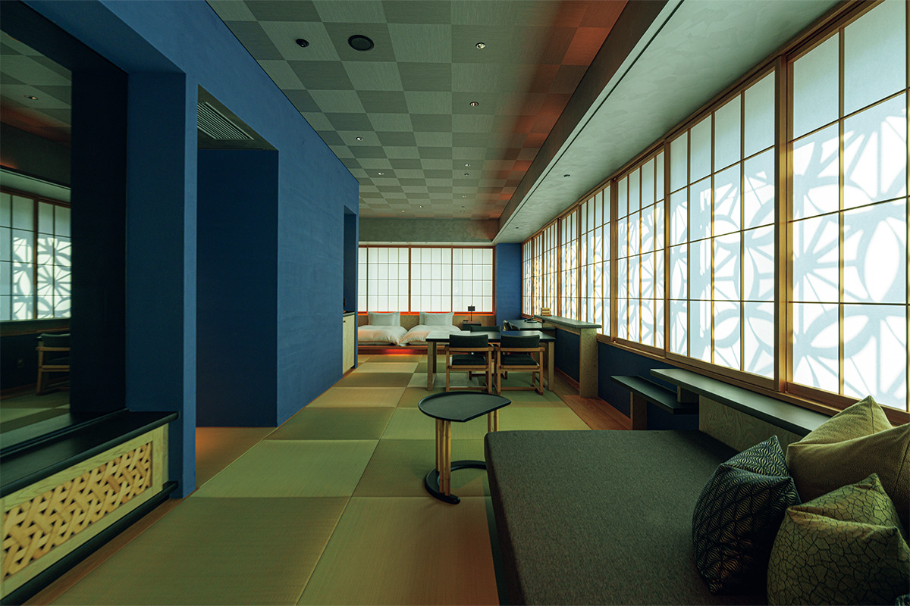
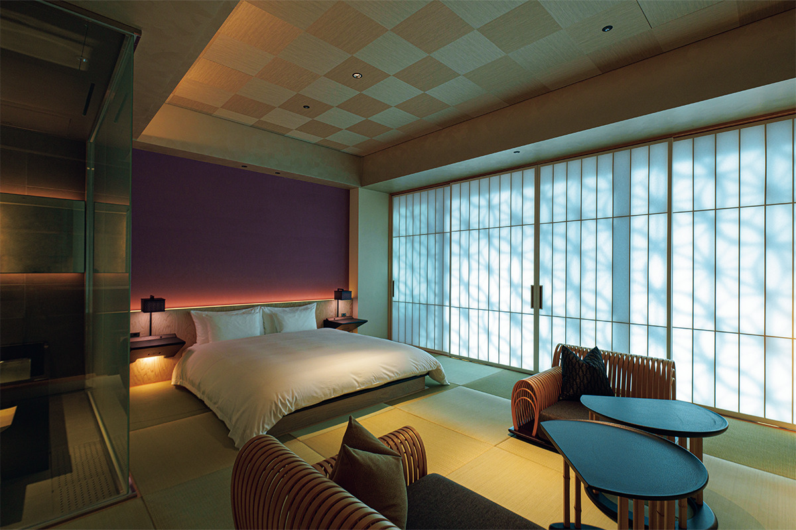
Днём солнце рисует на сёдзи номеров тот же узор листьев конопли, что и на фасаде. В центре каждого жилого этажа есть «Отяно-ма лаундж», общая комната только для гостей этого этажа. С номерами она соединена татами, поэтому заходить туда можно в домашней одежде или пижаме в любое время суток.
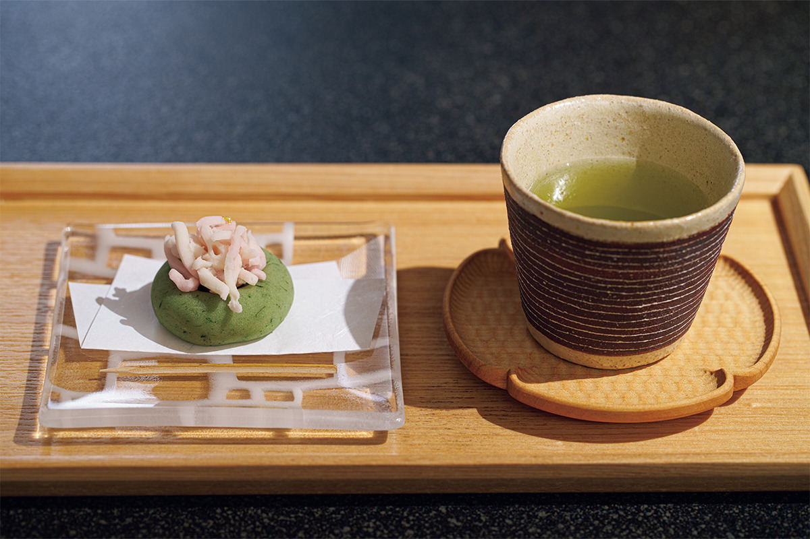
Если накануне попросить на стойке регистрации, утром в номер принесут рисовые колобки онигири и суп мисо.
Онсэн
Небо Токио в каменном колодце
Воду источника «Отэмати онсэн» поднимают с глубины 1500 метров. Когда-то на месте этих кварталов было море, поэтому вода солёная, с минералами морской воды и водорослей. На ощупь она мягкая, обволакивающая и прогревает до костей.
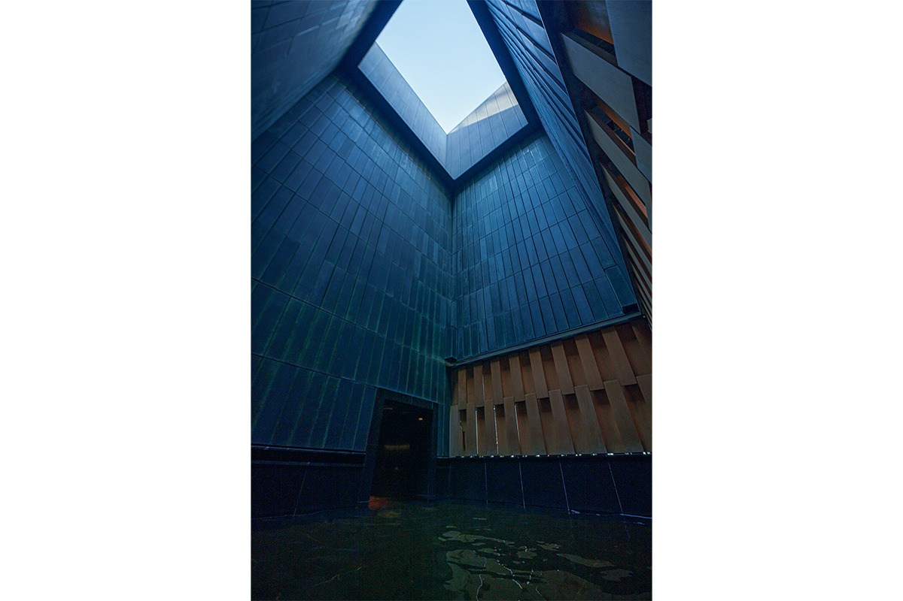
Купаться можно всё время пребывания, с 15:00 до 11:30 следующего дня. В комнате отдыха после бани гостей ждёт молоко.
Кухня
Ужин из трёх префектур
Ресторан находится на минус первом этаже. Вход в него задуман как подземный погреб, и у дверей лежит огромный гранитный камень. Внутри есть отдельные и полуотдельные кабинеты.
Главное здесь ужин «Nippon Cuisine». С осени 2023 года кухней руководит шеф-повар, выросший на французской технике. Его идея идёт из истории Эдо: по системе санкин-котай князья обязаны были по очереди жить в столице вместе со свитой, и с ними в город попадали продукты и блюда со всей страны.
«Токио это место, куда свозят лучшие продукты Японии и где расцвела богатая кухня. Отталкиваясь от этой истории, я решил брать для каждого сезона три префектуры, их продукты и местные блюда, и пересказывать их на сегодняшний лад»
шеф-повар ресторана
Ужин открывается «первым блюдом» на мотив четырёх знаменитых кушаний Эдо, а дальше начинается путешествие по трём префектурам. Весной 2024 года это были Коти, Тояма и Кумамото: кацуо-татаки из Коти, тоямская «куро-цукури» из кальмара с его чернилами и кумамотские «буэн-суши» со свежей рыбой, которые там ели по праздникам со времён Эдо. Повару важнее не рассказать историю местного блюда, а сделать его вкусным для сегодняшнего гостя. Тогда, по его словам, захочется поехать туда и попробовать оригинал.
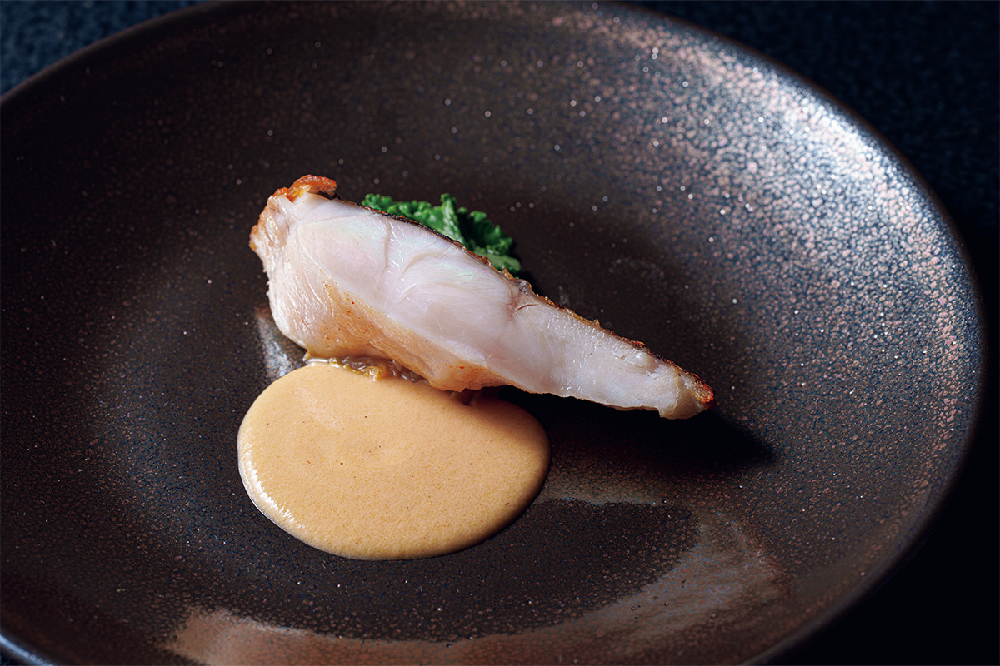
Всю посуду для ужина делают в Сигараки, гончарном городке в префектуре Сига, откуда родом шеф-повар. В подаче он старается сохранить цвет и форму самих продуктов, чтобы за ужином было видно, насколько разной бывает японская кухня.
Утром подают японский завтрак «Мэдзамэ-но тёсёку». Он построен на классическом правиле японской кухни «пять вкусов, пять цветов, пять способов приготовления», которое помогает держать в равновесии тело и душу.
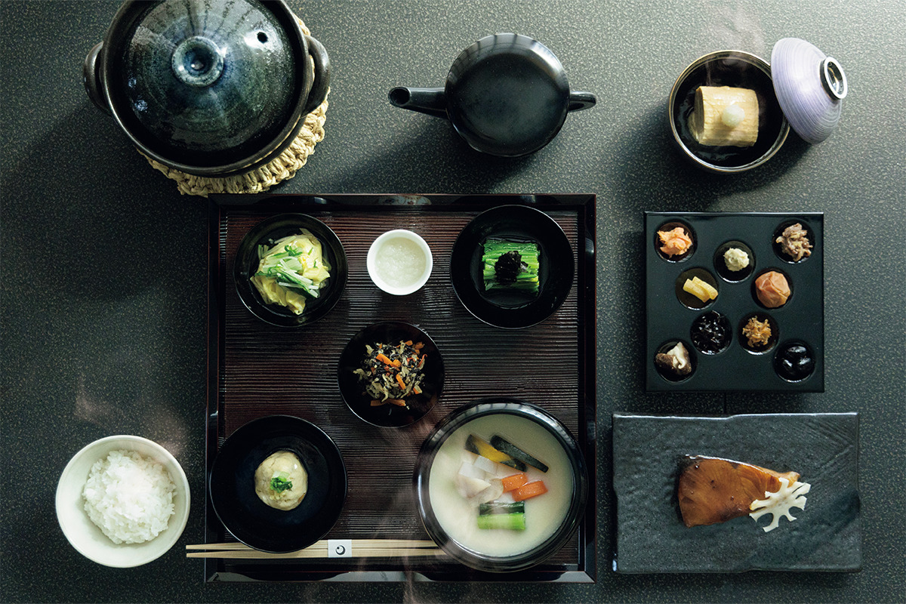
До 30 апреля 2024 года в отеле подавали клубничный послеобеденный чай, выстроенный по порядку настоящей чайной церемонии.
Опыт
Чай в лобби и фехтование над городом
В глубине лобби на втором этаже устроена сцена с татами. Здесь гостям показывают чайную церемонию: чай заваривают сотрудники, которых учил мастер чайной школы Мусянокодзи-сэнкэ. Желающие могут взбить чай сами.
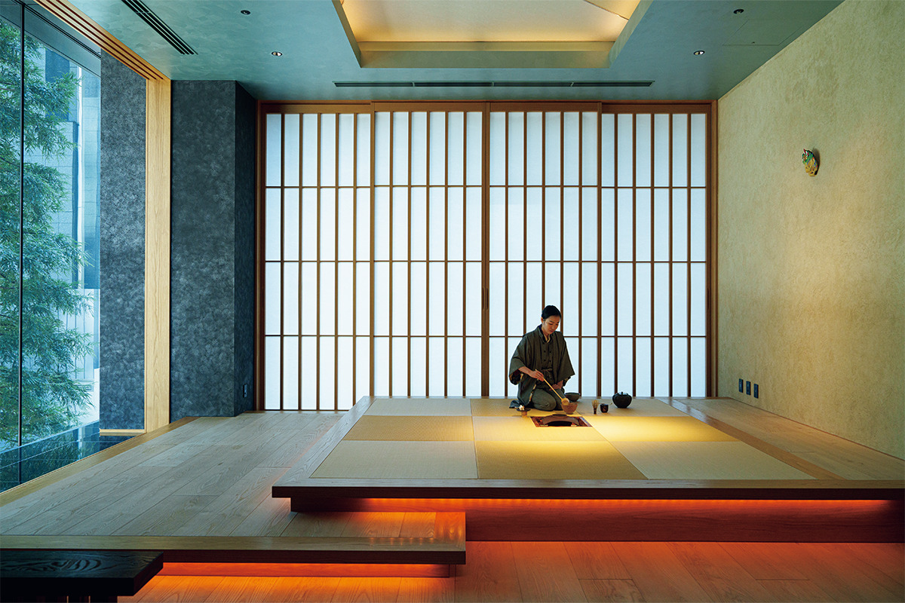
В лобби проходит и «Имаё каори-авасэ», занятие в духе кодо, японского искусства различать ароматы благовонного дерева. На чай и на кодо нужно записываться заранее.
Самое необычное занятие проходит утром на вертолётной площадке на крыше соседнего небоскрёба, на высоте 160 метров. Это фехтовальная разминка по движениям школы Хокусин Итто-рю, которая в эпоху Эдо держала свой зал в столице. Движения с мечом совмещены с глубоким дыханием: тело расслабляется, а мышцы работают в полную силу.
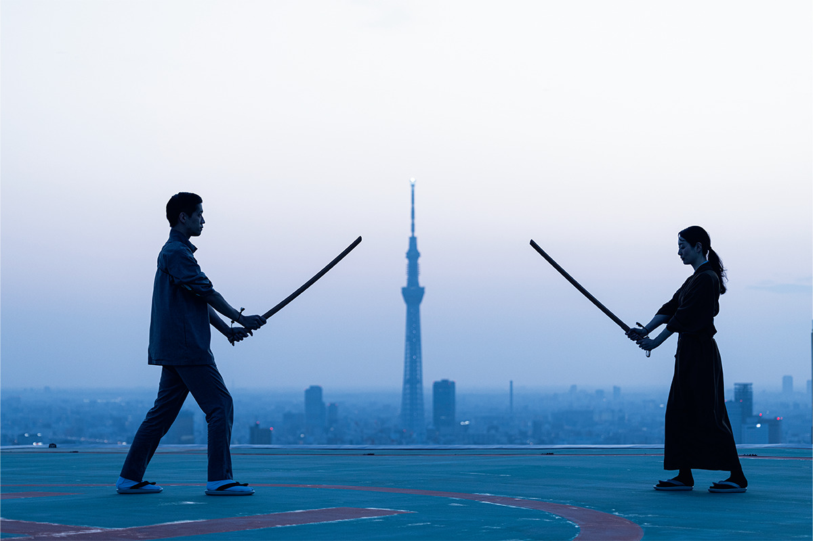
Лето
Эдо в лобби: как это было в 2022 году
У отеля бывают и сезонные программы. Летом 2022 года, с 1 июля по 31 августа, гости могли окунуться в летний Эдо. По вечерам лобби превращалось в ярмарку: там расписывали эдоские стеклянные колокольчики фурин и делали маски из папье-маше, наливали сакэ старой сакэварни, основанной в эпоху Эдо, и угощали рыбными лепёшками хампэн из старой лавки Нихонбаси. В закусочной соба на первом этаже подавали «фурин-соба», как у ночных уличных продавцов эпохи Эдо, которые вешали на свои лотки колокольчики. По субботам мастер ракуго рассказывал страшные истории, ведь в Эдо от жары спасались и так, холодком по спине.
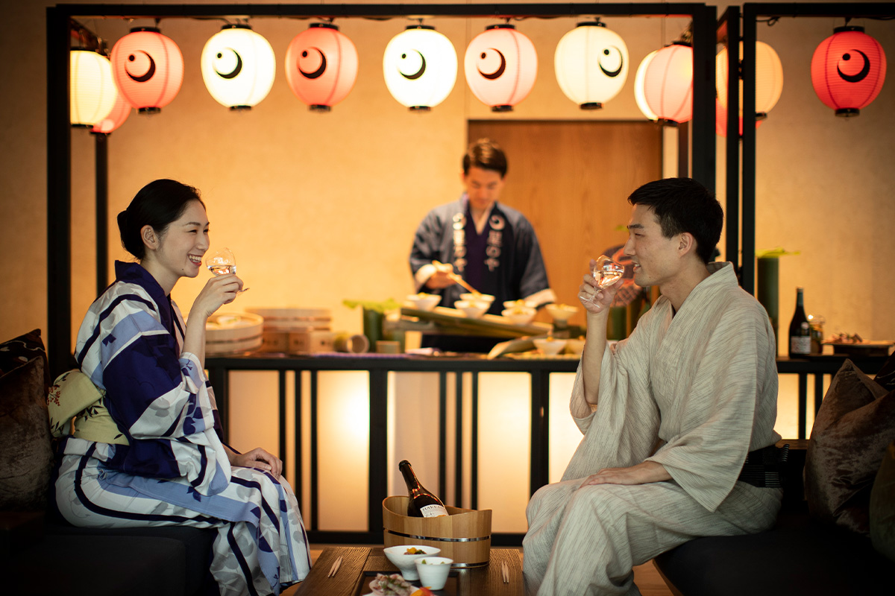
HOSHINOYA Tokyo
- Адрес
- Токио, Тиёда, Отэмати, 1-9-1
- Телефон
- +81 50-3134-8091 (9:30–18:00)
- Номера
- 84
- Заезд / выезд
- 15:00 / 12:00
- Цены / Вход
- от 95 000 иен за ночь с завтраком и ужином, с налогами и сбором за обслуживание (2024)
- Как добраться
- от вокзала Токио около 10 минут пешком, от станции метро Отэмати около 2 минут
Фото: Ацуси Ямахира.